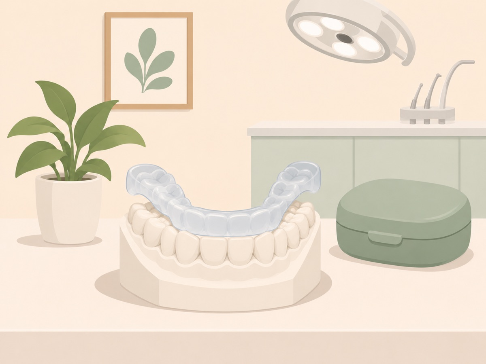

스플린트의 역할
스플린트는 본을 떠서 개인의 치아에 맞게 만듭니다. 윗니나 아랫니에 끼우고, 필요할 때 뺄 수 있습니다.
장치를 끼우면 치아가 장치의 고른 면에 닿습니다. 한쪽에 몰리던 힘이 넓게 나뉘고 씹는 근육의 긴장이 줄어듭니다. 관절이 받는 압력도 함께 낮아집니다.
치아를 깎지 않으며, 장치를 빼면 원래 상태로 돌아옵니다. 그래서 턱관절 치료에서 먼저 쓰는 방법에 속합니다.

나이트가드와의 차이
두 장치는 겉모습이 비슷해서 이름이 섞여 쓰입니다. 만드는 목적과 착용 후 관리가 다릅니다.
| 나이트가드 | 스플린트 | |
|---|---|---|
| 목적 | 이갈이로부터 치아 보호 | 관절과 근육의 부담 조절 |
| 설계 기준 | 치아의 모양 | 턱관절 검사 결과 |
| 착용 후 | 닳거나 헐거워지면 교체 | 정기적으로 닿는 면을 조정 |
치아가 닳는 것만 문제이고 통증이나 걸림이 없다면 나이트가드로 충분할 수 있습니다.
사용하는 경우
- ✓아침에 턱이 뻐근하거나 관자놀이가 아프다
- ✓씹을 때 턱이나 얼굴 근육이 아프다
- ✓턱에서 소리가 나면서 걸리거나 통증이 있다
- ✓이를 악무는 습관이 있고 턱이 쉽게 피로하다
- ✓나이트가드를 써 왔는데 증상이 그대로다
소리만 나는 턱
통증이나 걸림 없이 소리만 나는 턱은 장치 없이 지켜보는 경우가 많습니다. 스플린트는 검사에서 관절이나 근육의 부담이 확인될 때 씁니다.
장치의 설계는 사례마다 다릅니다
스플린트에 정해진 한 가지 모양은 없습니다. 진단과 치아 상태, 생활 방식에 따라 설계가 달라지며, 치과마다 쓰는 형태도 다를 수 있습니다.
덮는 범위
앞니부터 어금니까지 전체를 덮기도 하고, 어금니 부위만 덮기도 합니다.
끼우는 자리
윗니용과 아랫니용이 있습니다. 맞물림과 증상을 보고 정합니다.
두께
맞물림을 얼마나 높일지에 따라 두께가 정해집니다.
착용 시간
잘 때만 끼우는 경우가 있고 낮에도 끼우는 경우가 있습니다. 증상이 심한 시간대를 기준으로 합니다.
코골이나 수면무호흡이 함께 있으면 아래턱을 앞으로 내어 주는 수면용 장치를 따로 검토합니다.
착용과 조정
처음 끼우면 침이 늘고 발음이 어색합니다. 대개 1~2주 안에 익숙해집니다.
증상이 변하면 턱의 위치와 근육 상태도 변합니다. 그때마다 장치가 닿는 면을 다듬어야 하므로 정기적으로 확인합니다.
증상이 안정되면 착용 시간을 줄여 갑니다.
다시 확인이 필요한 신호
- 끼운 뒤 통증이 점점 심해진다
- 장치를 뺐을 때 치아가 전과 다르게 맞물린다
- 장치가 헐겁거나 너무 꽉 낀다
- 금이 가거나 깨졌다
스플린트는 치료의 한 부분입니다
스플린트만으로 치료가 끝나는 경우도 있지만 운동요법이나 습관 교정, 주사치료 등을 함께 해야 하는 경우도 많습니다.
장치로 증상이 안정된 뒤에도 맞물림을 바로잡아야 하는 경우에는 교합 교정치료를 검토합니다.
참고 기준: 미국구강안면통증학회 진료 지침(Klasser·Romero-Reyes, 2023) · 턱관절 장애의 교합 장치 치료 연구(Al-Moraissi 외, 2020)